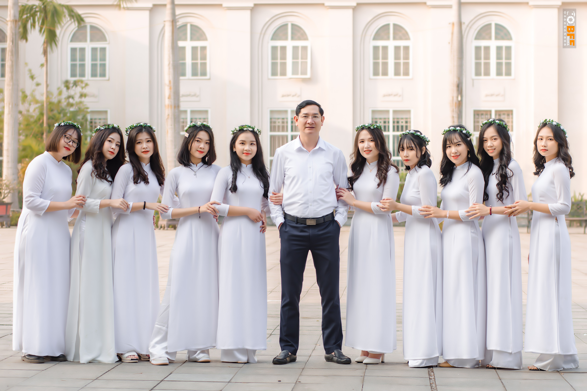

About Us.
|

|
|---|

Our Memories.

Bọn mình đã chuẩn bị trước 2 tháng cho buổi kỷ yếu này. Mọi thứ gói gọn trong chưa đầy 24 giờ, một ngày mệt mỏi nhưng rất đáng nhớ với tất cả mọi người. Bọn mình khoác trên người những chiếc áo cử nhân, cầm trên tay tấm bằng tốt nghiệp, chụp với nhau những bức ảnh rạng ngời. Có thể sau này, bọn mình sẽ dần quên đi những tấm hình đó, nhưng những giây phút được trải qua cùng nhau sẽ luôn đóng băng trong trái tim mỗi người.
Chúc mừng Cu's day cuối cùng bên nhau nhé, 38 chàng trai của bọn mình! Bọn mình đã ấp ủ, tổ chức sự kiện này trong vòng hơn 1 tháng, tự tay viết từng chiếc thiệp, làm từng chiếc bánh, cắt từng bức ảnh. Các cậu đã có một ngày rất vui đúng chứ? Mong rằng sau này, tất cả chúng ta hãy luôn nhớ về những kí ức tốt đẹp ấy. Chúc toàn thể 38 tình yêu trong tương lai tìm được một cô gái tuyệt vời như bọn tớ nhéee
Cảm ơn mọi người vì 8.3 cuối cùng. Thật sự không biết rằng sau này không được A2K52 tổ chức 8/3 cho thì bọn t sẽ thấy thiếu vắng như thế nào. 1 ngày bất ngờ với những cú lừa đi vào lòng người, nhưng dẫu sao cũng luôn biết ơn các chàng trai của bọn t vì màn slogan siêu chất ở sân trường. Mong là năm sau, 11 chị em tìm đều tìm được chàng trai của đời mình để khỏi phải nhớ về các chàng trai năm ấy nhé!.
Chúng ta đã gặt hái được rất nhiều thành quả về mặt nghệ thuật trong 3 năm vừa qua. 1 nhất, 2 nhì là điều mà chúng ta đều không ngờ đến được. Những buổi tập với rất nhiều cãi vã và mệt mỏi, nhưng sau tất cả, mọi người đều đã vượt qua và cố gắng không ngừng. Chúng ta có thể không phải là tập thể có màn trình diễn xuất sắc nhất, nhưng đối với bọn t mà nói, A2K52 mãi mãi là đỉnh nhất trong lòng.

2 lần làm đại hội đoàn cùng nhau, hẳn là chúng ta đã cãi vã rất nhiều. Từ việc lên ý tưởng, đi mua đồ, in ảnh, làm thiệp, những chiều ở lại trường đến đêm, hẳn là mọi người đã vất vả rồi. Mặc dù đại hội đoàn năm nào của lớp ta cũng không hoàn thiện 100%, và tiêu tốn rất nhiều money, nhưng nhìn chung thì cũng được đấy nhỉ? Cảm ơn mọi người vì đã luôn đồng hành cùng nhau qua những kỉ niệm đó nháa.
Chuyến du lịch đầu tiên và chưa biết là có phải cuối cùng của lớp ta hay không. 4 ngày 3 đêm ở cùng nhau, dù rất mệt vì phải di chuyển nhiều nhưng chúng ta thật sự vô cùng vui vẻ. Ta đã cùng nhau chơi team building, đi cáp treo, đi dạo Đà Nẵng, chơi công viên,... tất cả mọi thứ tạo thành một mảng kí ức mà t mãi mãi không quên được. Hi vọng là sau khi có kết quả đại học, chúng ta hãy cùng nhau đi chơi xa tiếp nhé!.
Contact.
Contact number : 0976766856 - 0975574737
Email : hathuongking11@gmail.com - linhphamdieu73@gmail.com